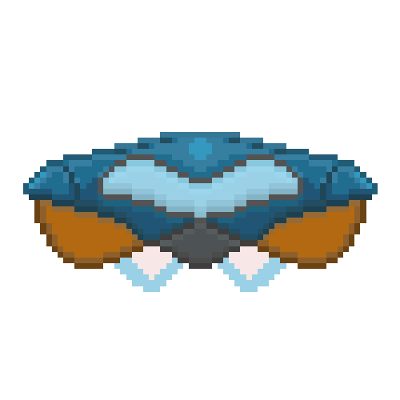
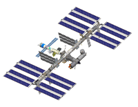

На самолете, который может разогнаться до 800 километров в час, лететь пришлось бы около двадцати дней. На космическом корабле Аполлон, скорость которого в несколько тысяч километров в час, можно было добраться до Луны за 72 часа. Современный космический аппарат может долететь до луны за 9 часов.
Космическое питание — это уже давно не только тюбики, которые показывали нам еще советские космонавты. Ведь полеты становятся долгими, и готовые продукты в космосе уже начинают занимать слишком много места. Так что основой рациона на МКС — и у наших космонавтов, и у представителей других стран — становятся сублимированные продукты (сначала их замораживают, а потом под вакуумом полностью удаляют из них влагу).
Междунаро́дная косми́ческая ста́нция, сокр. МКС (англ. International Space Station, сокр. ISS) — пилотируемая орбитальная станция, используемая как многоцелевой космический исследовательский комплекс; эксплуатируется с конца 1998 года по настоящее время (странами согласована эксплуатация по 2024 год включительно, рассматривается продление срока работы до 2028, 2030 года). МКС — совместный международный проект, в котором участвуют 14 стран: Россия, США, Япония, Канада и входящие в Европейское космическое агентство Бельгия, Германия, Дания, Испания, Италия, Нидерланды, Норвегия, Франция, Швейцария, Швеция[10][11][12] (первоначально в составе участников были Бразилия[комм. 1] и Великобритания[комм. 2]). МКС внесена в Книгу рекордов Гиннесса как самый дорогой объект построенный человеком[13]. Общая стоимость станции составляет более 100 миллиардов долларов.
